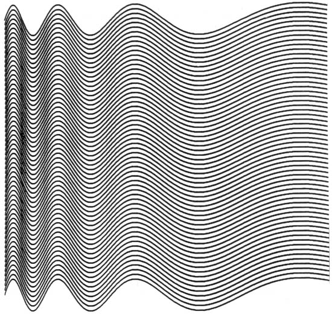

Ninety Parallel Sinusoids
With Linearly Increasing Period
Michael Noll, early 1960s

The top sinusoid was expressed mathematically and then repeated again and again. The result closely approximates the op-art painting Current by Bridget Riley.
Michael Noll
A. Michael Noll (born 1939, Newark, New Jersey) is an American engineer, and professor emeritus at the Annenberg School for Communication and Journalism at the University of Southern California.
He served as dean of the Annenberg School from 1992 to 1994. He was a very early pioneer in digital computer art and 3D animation and tactile communication.
Go Back